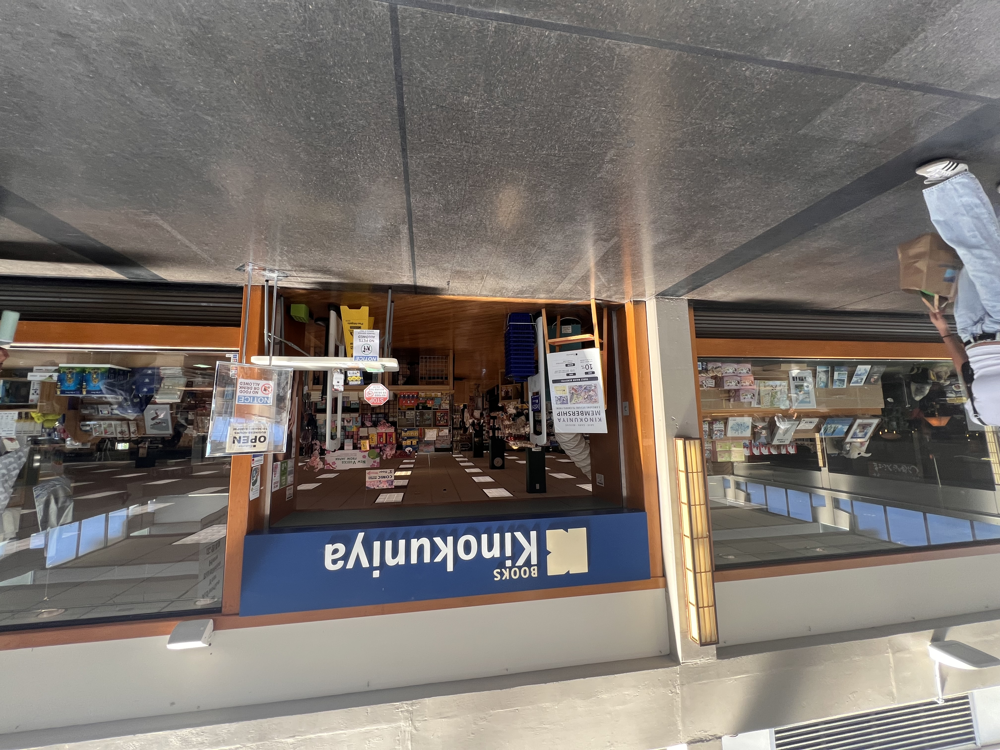
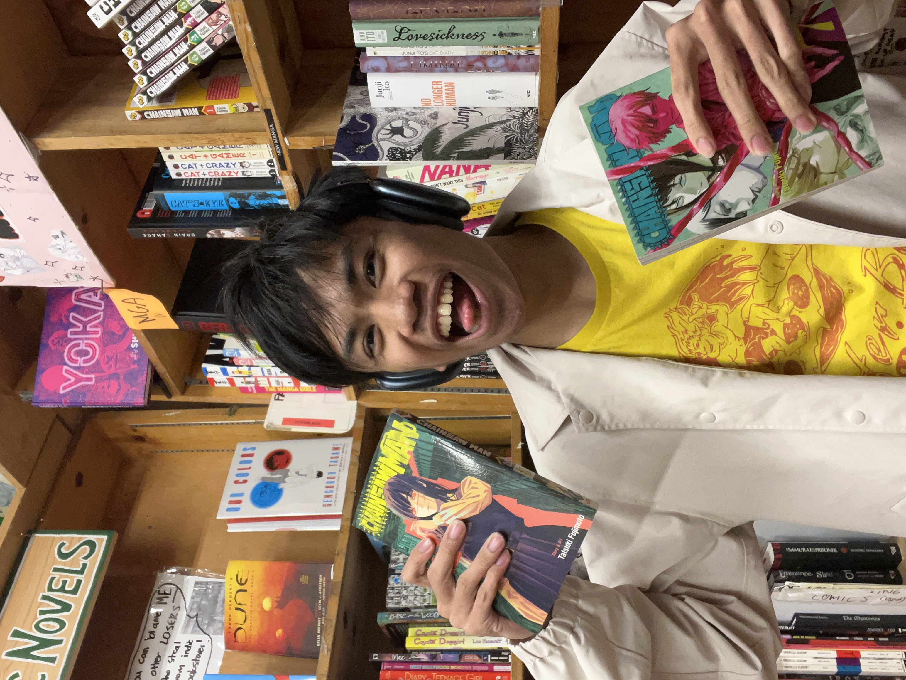
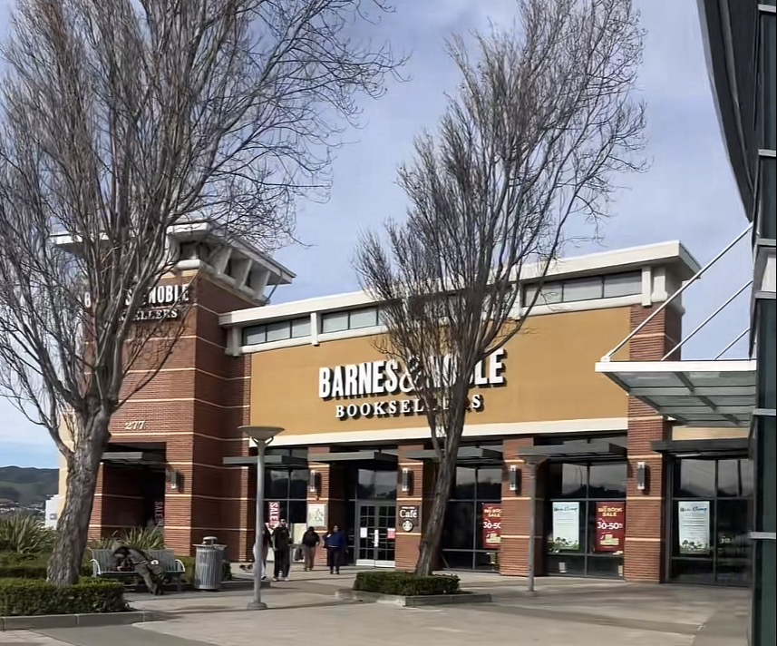

Start hereShelf report · Kinokuniya
Exploring Kinokuniya in San Francisco
The obvious first stop: huge selection, easy to lose an hour, and yes, you will probably buy more than you planned.
Field notes from someone who still buys ink on paper
Three stores, three afternoons, one overstuffed backpack. I went in person, compared shelves and prices, and wrote down what actually matters when you are trying to build a collection on a student budget.
The short version
If you want depth and imports, take the bus to Japantown. If you want convenience, B&N works. If you want indie vibes and a tight curated shelf, Green Apple is worth the trek.
Unpopular opinion, held loudly
It's time to address the elephant in the room with how many of us illegally pirate and access manga for free through sites like mangadex. The problem at hand is scanlations which are fan translations of manga made available on the internet. What is worse about scanlations is that they don't support the original creators and publishers at all in any way, shape or form.
Every truth has a sad reality and that is we live in a capitalist world. Nothing is free and you have to earn it, thus you should pay for your manga. We should get used to supporting original manga creators since this is what they enjoy doing and the least we can do is support them financially.
Image 1 of 3


Who am I? And why should you listen to me?
I created Manga Finder.io to help students find physical manga near campus without wasting time or money. I review each store in person, compare selection and pricing, and focus on what matters to readers: availability, discoverability, and overall shopping experience.
I spend a lot of time reading shonen, seinen, and modern titles, and I care about supporting official releases and creators. This blog is my practical guide for manga fans who want clear recommendations from someone who actively buys, reads, and compares manga in San Francisco.
At the same time as creating this blog, I participated in a Philippine Culture theater production as a cast member so I have quite a passion for the performing arts! It was a struggle balancing my time between school, work, and theater, but I managed to find time to read manga and write about it.

Start hereShelf report · Kinokuniya
The obvious first stop: huge selection, easy to lose an hour, and yes, you will probably buy more than you planned.

Field notes · chain run
The practical superstore run: English catalog, membership math, and a trip you can squeeze between classes.

Curated corner · the Ave
Indie bookstore hours: used finds, staff picks, and a manga bay worth checking whenever you are nearby.